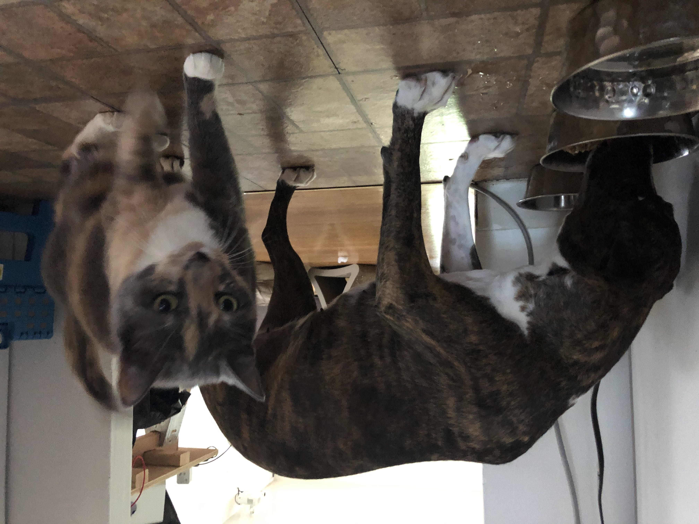

Part I: Prologue
Gyra was born August 3rd, 2015, to undefined parents in undefined location on August 3rd, 2015. She was born undefined pounds and undefined ounces.
She was born with a brindle pattern, a white stripe on her nose, and each of her four feet were white.

An example of Gyra's Markings
Gyra has since grown to be approximately 75 pounds, 2 feet tall on all four legs, and remarkably fast.
Part II: Controversy
It is alleged that Gyra has personally claimed to be the tallest dog in existence. These claims seem to be nothing more than unfounded rumors.
Furthermore, Snopes has dispelled the rumors in an official statement, saying:
We legitimately have zero idea what any of this is about. I guess some dude owns a dog and this dog thinks it's bigger than other dogs? Why are you calling me? Also stop recording me.

A stunning display of length
It is not clear whether Gyra is standing on her back legs when taking measurements, but even then, there are dogs that are clearly taller than her, making this claim demonstrably false.
Part III: Diet and Natural Habitat
Gyra is a notorious carnivore, and favorite foods include Chicken, Pork, and Beef. In addition to the carniverous portion of her diet, she also consumes some dairy products, most notably cheese and eggs, with cheese being the clear favorite.
Gyra has also been spotted consuming cat food, and on occasion, bugs in the back yard.

Gyra, eating in the wild
According to the image above, it is obvious that Gyra not only consumes cat food, but alos intimidates cats into fleeing their meals in order to consume them.
Gyra is known to make the edge of St. Louis County and St. Louis City her home, and she can be spotted going on walks, dining on cat food, or performing regular dog activities in the back yard.